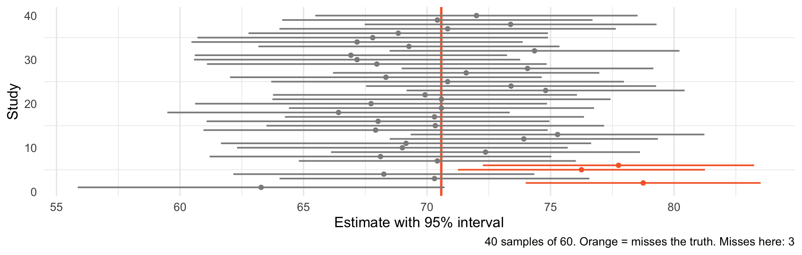
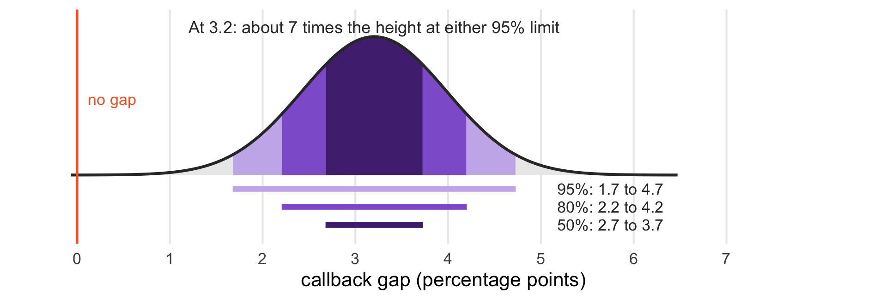
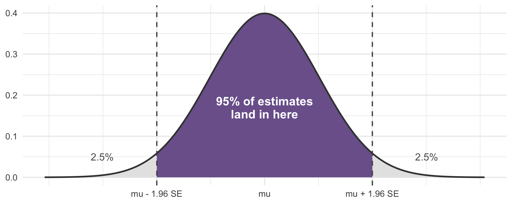
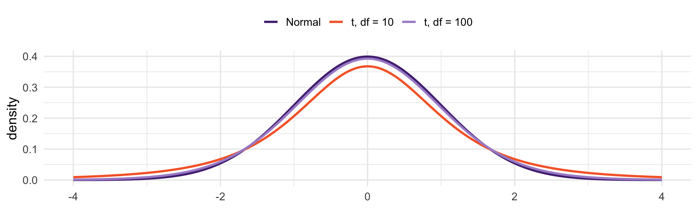

Code
[1] 0.01677431 0.04729139Ranges over verdicts
Last class produced a verdict on the résumé study: reject the null, \(p < 0.001\)
But “reject” throws away almost everything we learned about the probabilities
We estimated the gap at 3.2 points. How precisely?
Today: report the range of values the data are consistent with. More informative than a accept/reject verdict, and it is what most statisticians wish you would do instead.
Start from the Central Limit Theorem. For 95% of samples,
\[-1.96 \;<\; \frac{\widehat{\theta} - \theta}{\widehat{SE}} \;<\; 1.96\]
Multiply through by \(\widehat{SE}\), then subtract \(\widehat{\theta}\) and flip signs to isolate \(\theta\):
\[\widehat{\theta} - 1.96\,\widehat{SE} \;<\; \theta \;<\; \widehat{\theta} + 1.96\,\widehat{SE}\]
Nothing new happened. We took the CLT statement and solved it for \(\theta\) instead of \(\widehat{\theta}\).
\[\widehat{\theta} \;\pm\; 1.96 \times \widehat{SE}(\widehat{\theta})\]
The callback gap is between 1.7 and 4.7 percentage points, with 95% confidence.
It reports an effect size, in the original units
Its width tells you how much precision you have
And it contains the test: zero is outside the interval, so we would reject \(H_0\) at \(\alpha = 0.05\)
A confidence interval does everything a \(p\)-value does, plus tells you the magnitude and bounds. That is why journals increasingly require them.
“There is a 95% probability the true gap is between 1.7 and 4.7” - No!
Instead: “If we repeated this study many times, 95% of the intervals we built this way would contain the truth”
The truth is fixed. The interval is what is random. Once you have computed it, it either contains the parameter or it does not.
mu <- mean(pop)
ci <- map_dfr(1:40, function(i) {
s <- sample(pop, 60)
m <- mean(s); e <- 1.96 * sd(s) / sqrt(60)
tibble(study = i, est = m, lo = m - e, hi = m + e)
}) |> mutate(covers = lo <= mu & hi >= mu)
ggplot(ci, aes(est, study, color = covers)) +
geom_vline(xintercept = mu, color = "#F66733", linewidth = 1) +
geom_errorbarh(aes(xmin = lo, xmax = hi), height = 0, linewidth = .7) +
geom_point(size = 1.5) +
scale_color_manual(values = c("TRUE" = "grey55", "FALSE" = "#F66733")) +
labs(x = "Estimate with 95% interval", y = "Study",
caption = paste0("40 samples of 60. Orange = misses the truth. Misses here: ",
sum(!ci$covers))) +
theme_minimal(base_size = 13) +
theme(legend.position = "none", panel.grid.major.y = element_blank())
Drawing 40 different intervals resampling from the same population.
The 1.96 is not sacred - it is \(z_{0.975}\). We can set whatever level we want!
| Level | z | Lower | Upper | Width |
|---|---|---|---|---|
| 90% | 1.645 | 0.0192 | 0.0448 | 0.0256 |
| 95% | 1.960 | 0.0168 | 0.0473 | 0.0305 |
| 99% | 2.576 | 0.0120 | 0.0521 | 0.0401 |
Higher confidence leads to a wider interval.
99% confidence: about 30% more width than 95%
95% is a convention, just like p < .05.

Values near the estimate fit the data best; values near the 95% limits barely make it in.
The 50% interval spans only about a third of the 95% interval’s width. Areas under this curve are confidence levels, not the probability that the true gap lies in a range.
A 95% interval contains every value of \(\theta_0\) you would fail to reject at \(\alpha = 0.05\)
And excludes every value you would reject
That is not a coincidence. Both are built from \(|\widehat{\theta} - \theta_0| < 1.96\,\widehat{SE}\) — the test fixes \(\theta_0\) and asks about \(\widehat{\theta}\); the interval fixes \(\widehat{\theta}\) and asks which \(\theta_0\) survive.

Last class this same picture was a rejection region - we fixed \(\mu\) and asked where the estimate lands
Now we fix the estimate and ask which values of \(\mu\) could plausibly have produced it
Same 1.96, same arithmetic. We are reading the same picture in reverse.
A hyptohesis test answers one question: is \(\theta_0 = 0\) plausible?
An interval answers that question and also gives you the plausible range of effect sizes
It tells you which effect sizes the data rule out, not just whether zero is among them
Reporting only “\(p < 0.05\)” throws away too much information!
We wanted \(\sigma/\sqrt{n}\) but had to use \(s/\sqrt{n}\). Estimating the spread adds uncertainty.
So the standardized statistic is not quite normal - it follows a \(t\) distribution
The \(t\) has fatter tails: extreme values are more likely than the normal admits
Its shape depends on degrees of freedom, roughly \(n - 1\)

Small samples need a wider multiplier than 1.96 - 2.23 at \(df = 10\)
By \(df = 100\) the difference is trivial (1.98 versus 1.96)
In large samples, nobody can tell the distributions apart, and it does not matter which you use
Use the \(t\) when \(n\) is small. R does this automatically, which is why t.test reports 4711.6 degrees of freedom for the résumé data and gets essentially the normal answer.
[1] -0.04729503 -0.01677067
attr(,"conf.level")
[1] 0.95Sign flipped because R orders the groups alphabetically - afam first
Same magnitude: a gap of 1.7 to 4.7 points
And this is equivalent to a regression. As we saw earlier, a regression on one dummy is a difference in means.
tt <- t.test(cb ~ ethnicity, data = resumes)
fit <- lm(cb ~ ethnicity, data = resumes)
# t.test reports afam minus cauc; lm reports cauc minus afam.
# Flip the t-test's sign so the two line up.
tibble(Method = c("t.test", "lm"),
Estimate = c(tt$estimate[2] - tt$estimate[1], coef(fit)["ethnicitycauc"]),
SE = c(tt$stderr, coef(summary(fit))["ethnicitycauc", "Std. Error"]),
Lower = c(-tt$conf.int[2], confint(fit)["ethnicitycauc", 1]),
Upper = c(-tt$conf.int[1], confint(fit)["ethnicitycauc", 2])) |>
knitr::kable(digits = 4)| Method | Estimate | SE | Lower | Upper |
|---|---|---|---|---|
| t.test | 0.032 | 0.0078 | 0.0168 | 0.0473 |
| lm | 0.032 | 0.0078 | 0.0168 | 0.0473 |
Same estimate, same standard error, same interval.
Polls report a proportion, where \(\widehat{SE}(\hat{p}) = \sqrt{\hat{p}(1-\hat{p})/n}\). The margin of error is \(1.96 \times \widehat{SE}\):
| n | Margin of error (pct pts) |
|---|---|
| 400 | 4.9 |
| 1,000 | 3.1 |
| 1,500 | 2.5 |
| 3,000 | 1.8 |
Computed at \(p = 0.5\), the worst case. That is where “±3 points” on a poll of 1,000 comes from.
Turn it around: pick the precision you need and solve for \(n\).
\[n = \left(\frac{1.96}{\text{MoE}}\right)^{2} \times p(1-p)\]
| Target margin of error | Required n |
|---|---|
| 5 pts | 384 |
| 3 pts | 1,067 |
| 2 pts | 2,401 |
| 1 pt | 9,604 |
Halving the margin of error quadruples the cost - the \(\sqrt{n}\) rule from earlier, in a budget
Going from ±3 to ±1 point takes you from about 1,000 respondents to nearly 10,000
“There is a 95% chance* \(\theta\) is in this interval.” The interval is random; \(\theta\) is not.
“95% of the data fall in this interval.” It describes an estimate, not observations.
“The intervals overlap, so the groups do not differ.” Overlapping intervals can still yield a significant difference. Test the difference directly.
“Every value inside the interval is equally plausible.” Values near the estimate fit the data far better than values at the edges.
A confidence interval accounts for sampling variability only
It assumes your design was sound, your measure valid, your sample representative
A tight interval around a biased estimate is precisely wrong
Literary Digest could have reported a very narrow interval around 57% for Alf Landon.
Lead with the estimate and its interval, in substantive units
Give the \(p\)-value, but do not let it carry the argument
Say “we estimate a 3.2 point gap (95% CI: 1.7 to 4.7)” - not “the effect was significant (\(p < .001\))”
Compute a 95% CI for the callback gap by résumé quality. Does it include zero?
Compute a 90% interval for the race gap. Is it wider or narrower? Why?
Take a subsample of 300 résumés and compute the CI. How does the width compare, and by roughly what factor should it change?
Get the same CI two ways — t.test and confint(lm(...)). Do they agree?
Read: Gelman, Hill and Vehtari, Ch. 6–7
Regression starts next week. We now have every piece:
The CEF is what we want to estimate
\(\beta_1 = \text{Cov}(X,Y)/\text{Var}(X)\)
Sampling distributions, standard errors, intervals
We begin with simple regression: fitting a line to the CEF